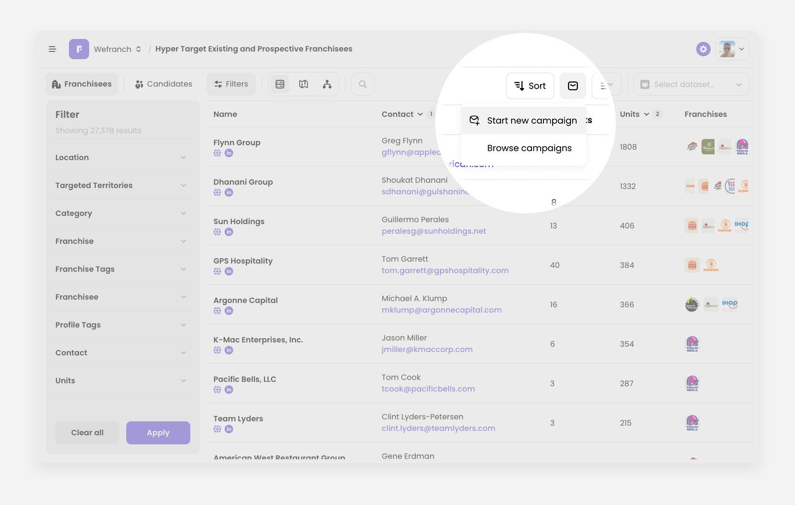
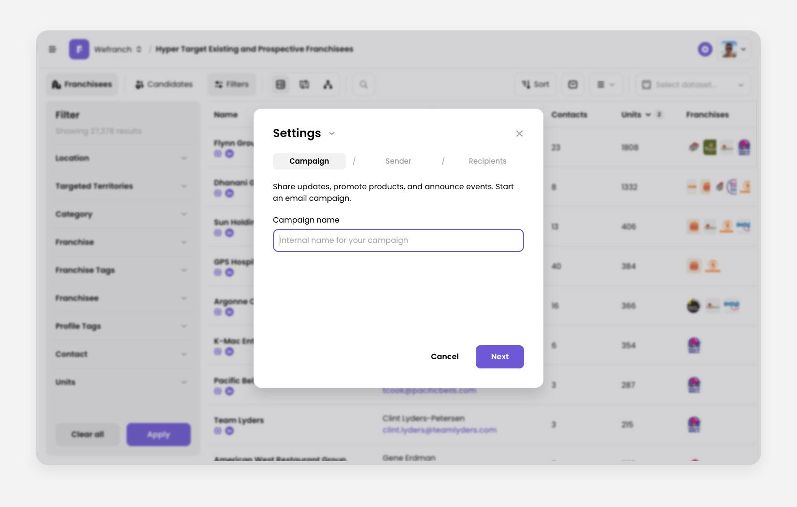
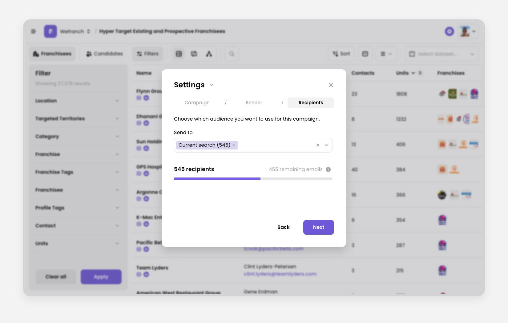
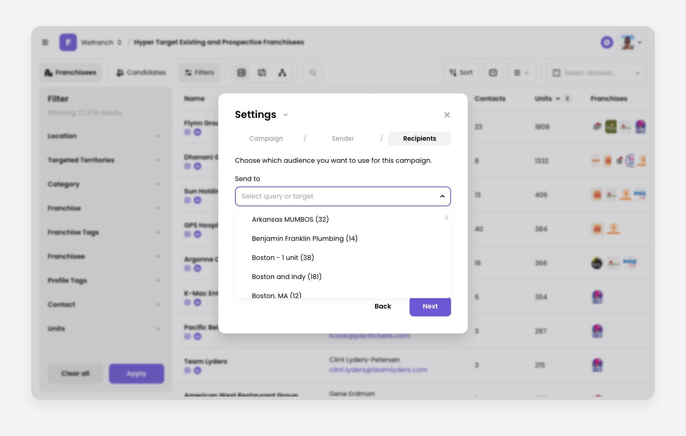
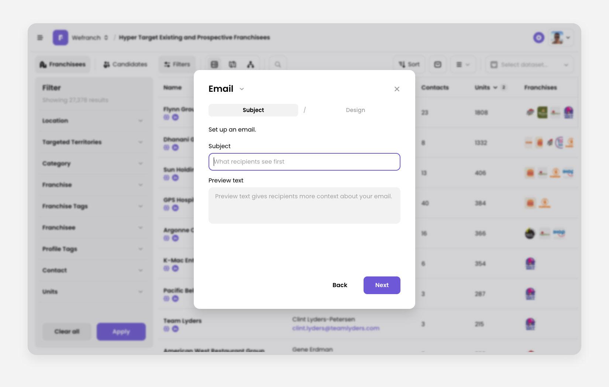
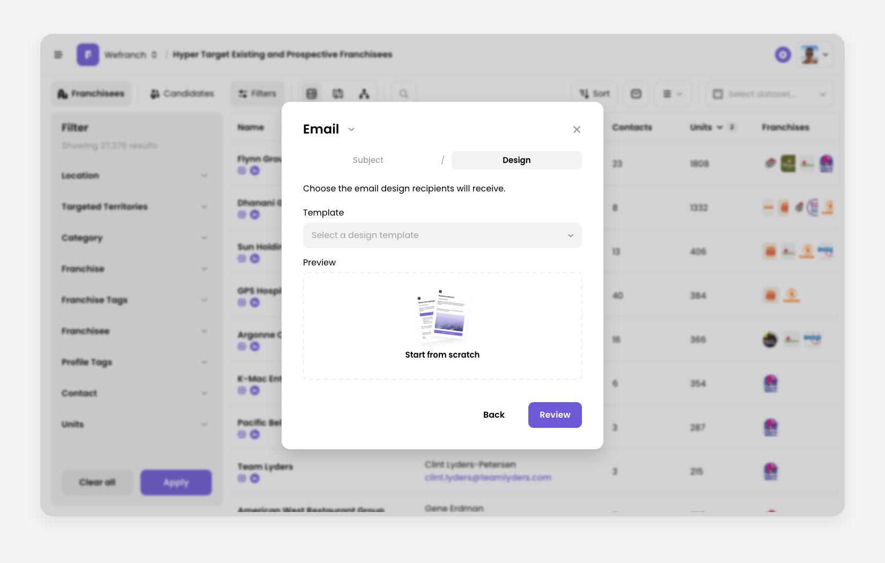
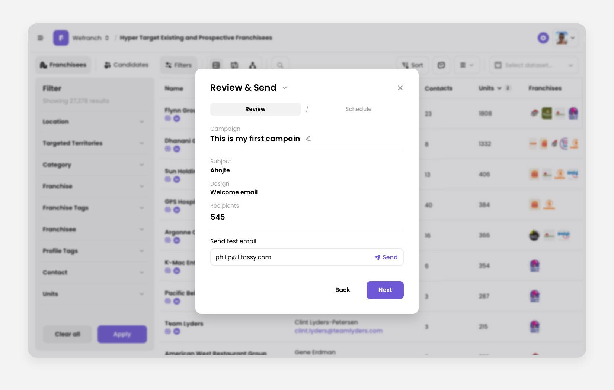

How to create and send email campaigns
Open the wizard
Start by clicking the email icon in the toolbar on Prospects or Leads.
The wizard opens on Settings. The title dropdown has three stages: Settings → Email → Review & Send. Move between steps with Next and Back, or with the step tabs. If you close the wizard after the first step, it asks you to confirm before discarding your changes.

Name the campaign
On the Campaign step, you can enter an internal name. It can be up to 64 characters. Leave it blank and the campaign stays Untitled campaign.

Choose a sender
On the Sender step, open the email dropdown and choose Add new sender. Enter the email address and name, then either authenticate the domain with DNS or verify the address with the link we send.
Choose recipients
On the Recipients step:
- Send to starts as Current search, the contacts in your current filters.
- You can switch to a saved search. The recipient count and the remaining-capacity bar update as you change the audience. Each campaign can send up to 1,000 emails a day.


Write the subject
On the Subject step, enter a subject line. It is required and can be up to 150 characters. You can also add preview text, the short line inboxes show next to the subject.
Want to send more than one email? Click switch to an email sequence under the title. See How to create an email sequence.

Design the email
On the Design step, start from scratch or pick a saved template. Then click Review. If something required is missing, the wizard jumps back and highlights it.

Review and send
On the Review & Send step:
- Check the subject, design, and recipients.
- Rename the campaign from the Campaign row if you want.
- Send a test email if you want one. It needs a valid address.
- Click Schedule.

Schedule the campaign
Choose Send now, or Schedule for later and pick a date and time.